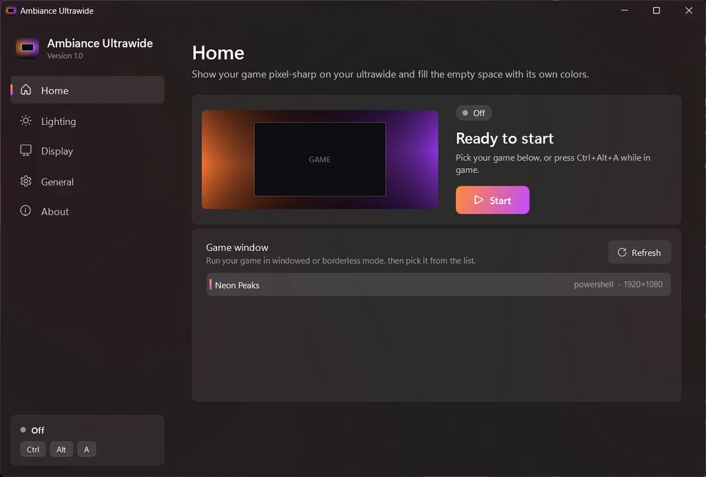
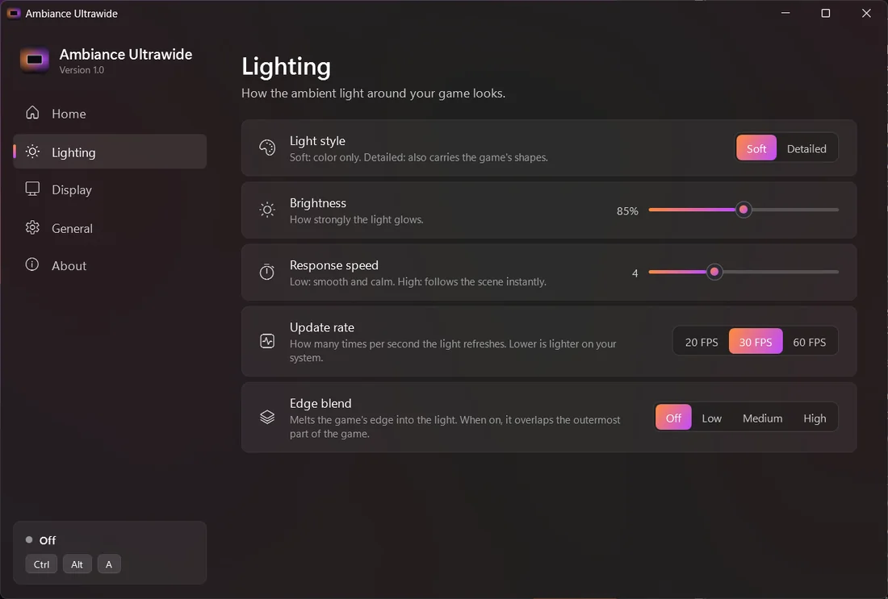

Ambiance Ultrawide
Ambient light synced to your game.
Ambient light synced to your game, for ultrawide monitors. It fills the black bars around your game with a soft glow, like a TV's ambient lighting. The game stays pixel-sharp, with no FPS cost.
Free · Open source · Windows 10/11 · 12 languages

The game stays sharp, the empty space glows with its own light
No more blurry low resolution
Left: Windows resolution lowered. Right: Ambiance Ultrawide.


Fill the screen with no FPS cost
The game renders the same pixels, Windows shows them larger

Soft or detailed light
A calm color glow, or one that carries the game's shapes

Pick your game, press Start
Or press Ctrl+Alt+A in game

Tune the light to your taste
Style, brightness, response speed and update rate

Features
GPU capture, about 1% CPU. Never touches game memory.
- Ambient light synced to the scene in your game
- Pixel-sharp image, no blur from lowering the resolution
- Removes window borders, resizes and centers the game
- Fill the screen with no FPS cost
- GPU screen capture, about 1% CPU
- Soft and Detailed light styles
- Brightness, response speed and update rate settings
- Never touches game memory, collects no data
About
Turn the black bars on your ultrawide into ambient light synced to your game.
When you play a 16:9 game on a 21:9 or 32:9 monitor, the sides stay black. Ambiance Ultrawide fills them with a soft glow that changes in sync with the scene in your game, just like the ambient lighting on modern TVs. Explosions, sunsets and neon lights spill past the edges of the game, and the whole screen becomes part of it.
Two light styles: Soft (a calm color glow) and Detailed (follows the shapes in the game). Brightness, response speed and update rate are adjustable.
Sharp, not blurry: lowering the Windows resolution makes everything blurry. Ambiance Ultrawide shows the game in a borderless window instead, pixel for pixel and centered. If you want it bigger, it can enlarge the game to fill the screen with the Windows magnifier, with no FPS cost.
Light on your system: GPU screen capture, about 1% CPU. It never touches the memory or files of your games; it only reads what is shown on screen. It collects no data and makes no network connections.
How to use: run your game in windowed or borderless mode, pick it in Ambiance Ultrawide and press Start. Or press Ctrl+Alt+A while in game. Ctrl+Alt+Z toggles scaling.
Free and open source. Interface in 12 languages.